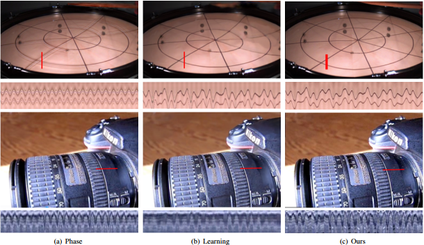

Warp-Based Video Motion Magnification for Revealing Subtle Changes
1Yunfei Shi 1Zhiyong Huang 1Yirong Wu 1,2Shuifa Sun* 1Fangmin Dong
1College of Computer and Information Technology,China Three Gorges University, Yichang, Hubei, P.R.China 2Department of Electrical Engineering and Computer Science,University of Wisconsin-Milwaukee, Milwaukee, USA
Figure 1: Baby sequence and its amplification (from left) above, the method based on phase, the method based on the deep learning and the method based on image warping (this paper). For each of the amplified sequence, the location of the red line and blue line show time slice (the following), the method based on image deformation reduces the artifacts and noise, the effect and the depth of learning is closest to, and even in every frame image quality is more similar to the original image.
Abstract
We present a warp-based video motion magnification, in which only one-frame latency is maintained. Video motion magnification can amplify subtle motions and even reveal small color changes in video sequences. Current techniques analayz the signals of each pixel over time in differtent spatial scales and orientations, which inevitably amplifies the noise and results in ringing artifacts in video. The start-of-the-art techniques relying on filters by learning also have excessive blurring in images. In this paper, we propose a simple Lagrangian technique, which involves image deformation and optical flow. We achieve motion magnification by warping the frame in video, which is guided by feature points and only uses motions from the past, keeping the original video details without amplifying noise at the same time. In this way, the proposed method can work online in real time. Experimental results show that our method can achieve high-quality results and significantly reduce artifacts while comparing to the state-of-the-art.
Figure 2:Our warp-based approach manipulates motion in videos by tracking featrue points and warpping the images. The method proposed in this paper calculates feature points in the first frame of the video and tracks these feature points in subsequent frame sequences. For some video sequences, tracking feature points in the ROI area gives better results.
Introduction
Leveraging current Lagrangian based techniques,we propose a warp-based video motion magnificationin in this paper. We assumed that the reasonable deformation creat similar effects as subtle motion in each frame. Our method does not need a lot of manual intervention, but only a few of feature points that need to be tracked, then it warps the frame to realize motion magnification without amplifying noise. Moreover, it doesn’t need to design filters, which preserves all the details in video to the greatest extent. The main contributions of this paper are as follows: 1)We present a simplified Lagrangian subtle motion magnification, which barely needs manual intervention. 2)The ”as-similar-as-possible” approach is applied to motion amplification. 3)Foreground separation and texture synthesis are used in our magnification to improve the details.
Figure 3:Image quality comparison. (b, c, d) is the baby magnification sequence (magnification 20 times), phase-based method shows more ringing artifacts and blurring, and the learning-based method is blurring at the details. Our method proposed in this paper is better. The image details are preserved and there is no magnification noise.

Figure 4:(a) The phase-based approach uses spatial decomposition filters and time filters to show severe ringing artifacts; (b) Learningbased methods learn spatial decomposition filters directly from image frames, in static better edges and fewer ringing artifacts can be obtained in the static mode; (c) We do not use spatial and temporal filters and can obtain the results of the approximate when comparing with the learning-based method.
Video
By setting different bandwidth and position for DoG filter, we show that DoG based FBE model is able to realize selective segmentation, that is, to segment different part in the same image.
Source Code
Source Code (Matlab) and Models: [ Demo ]Citation - BibTeX
Warp-Based Video Motion Magnification for Revealing Subtle Changes
Yunfei Shi, Zhiyong Huang, Yirong Wu, Shuifa Sun, Fangmin Dong. Warp-Based Video Motion Magnification for Revealing Subtle Changes
.
[ PDF ]
[ BibTeX ]